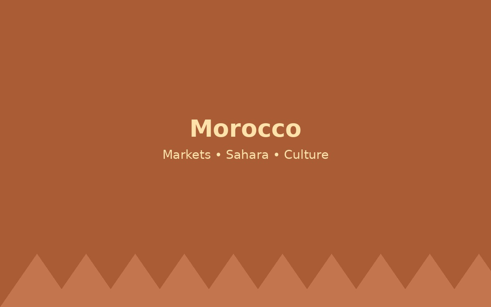

Morocco

Morocco is known for colorful markets, historic cities, mountain views, and the Sahara Desert. Travelers can visit Marrakech, Rabat, Casablanca, and Fes while experiencing Moroccan food, architecture, and hospitality.
Things to Do
Visit Rabat and Casablanca, explore Marrakech markets, try tagine and mint tea, and consider a desert tour.
Why Visit?
This destination was included because it gives travelers a mix of history, culture, food, and memorable experiences.